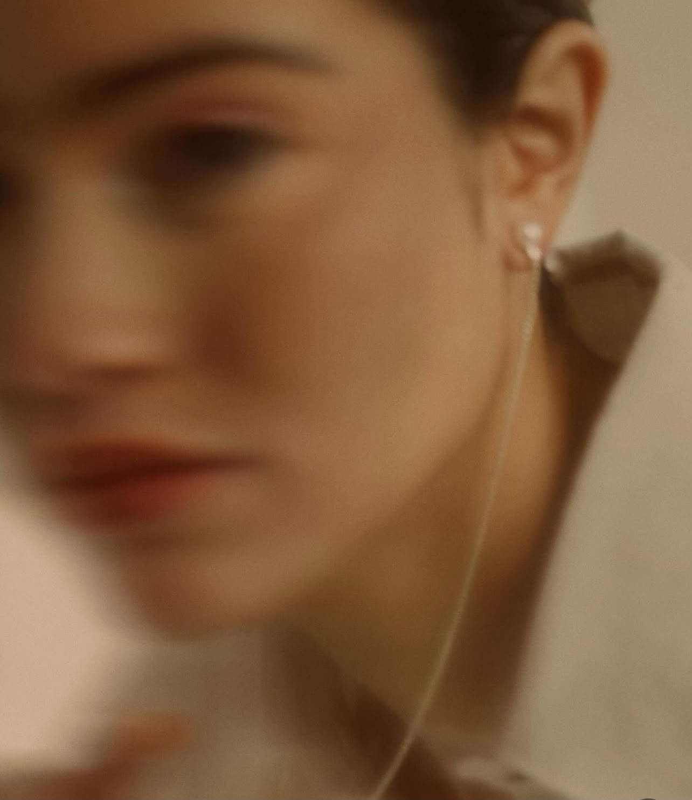
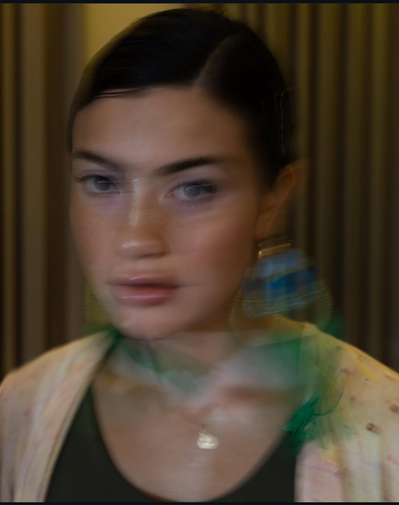
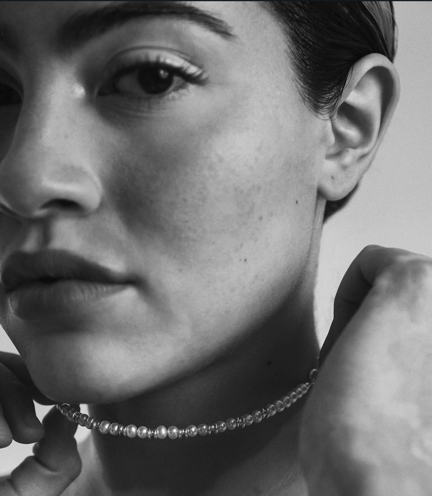
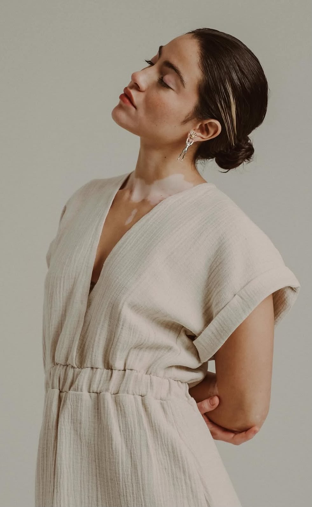
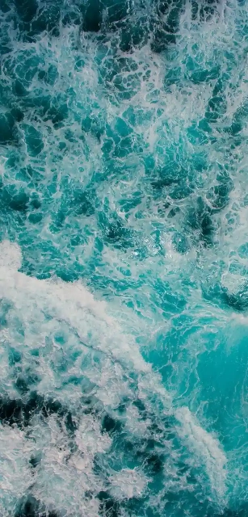

Limón, Costa Rica



may my sounds sync your own <3
Música, voz y poesía. Proyecto de María Celeste Amaya Domínguez.

Sobre mí
Entre ciencia, mar y canciones.
Soy María Celeste Amaya, Azul Clarito: cantautora, poeta y artista limonense. Crecí junto al Caribe costarricense, donde aprendí a mirar la naturaleza desde dos lugares que para mí nunca estuvieron separados: la curiosidad de entenderla y las ganas de cantarle.
Soy ingeniera química, docente de ciencias, instructora de yoga y autora de poesía, pero la música es el lugar donde todas esas partes de mí se encuentran. Escribo sobre el mar, el amor, la memoria, la gente, las contradicciones de la vida y las historias que nacen en el Caribe.
Mi proyecto busca convertir esas experiencias en canciones que se sientan cercanas: a veces alegres y bailables, otras íntimas, nostálgicas o contemplativas. Azul Clarito es mi manera de hacer que todo lo que siento encuentre sonido.
may my sounds sync your own ♡
- Cantautora
- Poeta
- Ingeniera química
- Caribe


En producción
Memorias del Mar
Mi próximo EP, inspirado en el mar y la memoria de Limón. Muy pronto más detalles — seguí mis redes para no perderte el lanzamiento.
- Always You 11/11 · 11:11 am
- Chozita de Mar 23/12 · 12:23 md
- Bon Bon 06/04 · 4:06 pm
- María Celeste 28/07 · 7:28 pm